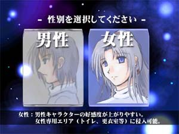
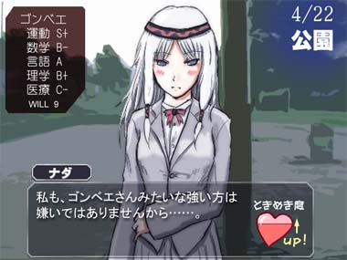
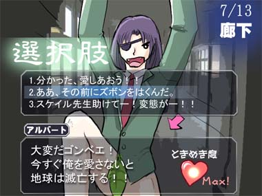
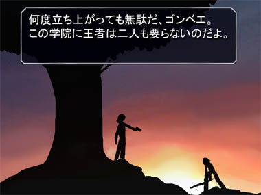
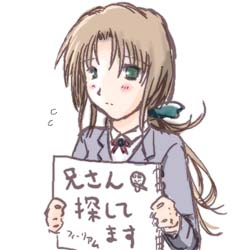

| じょっぱれ！ 「シルフェイド学院物語」 紹介ページ |
| 期待の学園物シミュレーションADV、ついに登場！ | |
| お待たせしました！極秘裏に開発していた シルフェイドシリーズのキャラクター総出演でお送りする 学園シミュレーションADVゲーム「シルフェイド学院物語」、 ついにリリース！ 【出演キャラクター】 シルフェイド見聞録 エシュター、シーナ、アルバート、セトなどの学生キャラクター、 校長先生、教頭先生などの各種先生キャラクター シルフェイド幻想譚 リクレール、スケイル、シズナ、シン、エージス、 イシュテナ、クロウなど シルエットノート 冬村サユキ、校長先生、狐狩刑事など シルフェイド千夜一夜＋探求紀行（予定作品） バルト、ヘレンなど＋フィーリアム、シフュン、ミーアなど 【ゲームの概要】 「あなた」は私立シルフェイド学院に入学し、 波瀾万丈の高校生活3年間を過ごします。 ゲームの目的は完全に自由。 学院最強の武闘家を目指すもよし、 気になるあの子と仲良くなるのもよし、 近所のダンジョンを全制覇するのもよし、 学院での地位を上げて学院を牛耳るトップになるもよし、 練金部で禁断の賢者の石を作ることだって、 誰も止める者はいないのです。 残した功績により、エンディングは様々に変化します。 【主人公】 プレイヤーキャラクターは男女の性別が選択可能！ また、6文字内のカタカナで名前を付けることが可能となっています。  性別選択画面 男性は男性専用エリアに、女性は女性専用エリアに入れます。 主人公のステータスは、育成パートで成長させることができます。 勉強が得意な人になるか、運動が得意な人になるかは あなた次第です。 |
| 総勢50名以上の登場キャラクター | |
ステータスや所属クラブ（サークル）、 ADVパートでの行動などによって、出会うキャラクターや 好感度（ときめき度）が変化します。  剣術部に入部した場合、 主将のナダやアルバートと出会える 剣術部の場合、3ヶ月に一回開催される剣闘大会で 良い成績を残せば、それだけナダ主将の好感度も上昇！ あなたは大会最後に現れるロベルト教頭に勝つことができるか！？ |
| 学院で巻き起こる様々なイベント | |
【男女を問わない（！？）恋愛イベント】 主人公が男性だったとしても、キャラクターの好感度が上がると ↓のようなイベントが発生！  選んだ選択肢に応じて好感度が変化するぞ！ ※多くのイベントは主人公が男性の場合、女性の場合、 どちらでも発生します。ただし同じイベントでも、 性別によって展開が変化することがあります。 【そして、戦い】  主人公 vs 謎の男、伝説の木の下での最終決戦。 勝利するのは果たして……！？ |
| 初の試み、イベント投稿！ | |
| 本作ではテキストファイルを編集し、プレイヤー自身が シナリオ（イベント）を作成・投稿することが可能です！ 面白い投稿作品には本編イベントへの採用のチャンスも！ （ただし採用に際して、ある程度内容を変更する可能性が ありますのでご了承下さい） なお、投稿の際には以下の点を併記してください。 ・そのイベントの中心キャラクターを一人だけ指定してください （例：アルバート、シーナ） ・そのイベントの主な発生条件 （例：剣道部所属、運動能力B＋以上、 主人公が男性の場合のみ、など） 以上です！ 投稿はゲームファイルに同梱のリンクから移動できる 専用投稿ページからお願いします。 （イタズラ防止のためです、ご了承下さい） 皆さまのご投稿、お待ちしております！ |
| 推奨環境 | |
| CPU ： 1.0GHz以上 メモリ ： 256MB以上 グラフィック ： 3D表示可能なグラフィックボードが あると描画が高速になります |
|  |